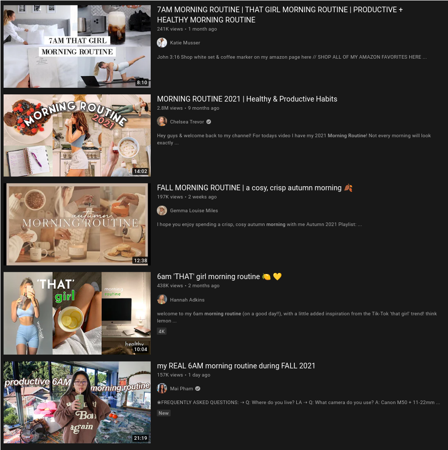
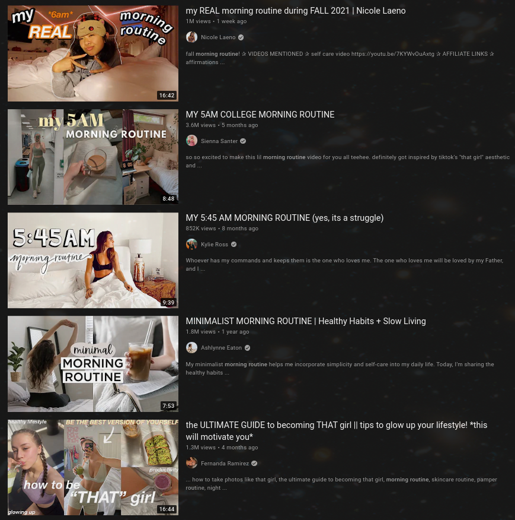
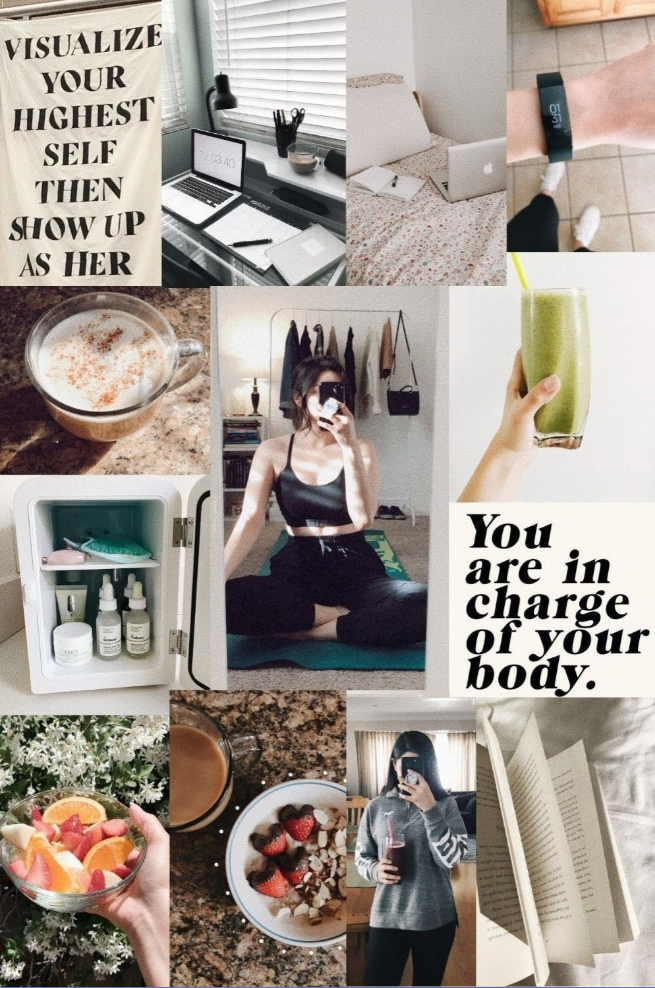

14 10 2021
If you put "morning routine" into the search field on YouTube on press enter you’ll be faced with an interesting phenomenon
 
There’s an endless supply of these videos that seem to follow the same general structure. The title will be something like:
My 05:00AM Healthy <current year> Productive Morning Routine for Healthy Living and Productivity! *inspirational* *motivational*
The thumbnail will contain a lot of beige and light colors that looks like it’s from some interior design catalog.
The contents of the video will be a subset of
Waking up really early
Beige colors
Yoga
Cold Brew/Matcha Tea/Green smoothie in a jar
Bullet-journaling
Gratitude-journaling
Meditation
Plants
Skincare
Reading Self-help books
Ass Workout
Vegan
Pretty cereal bowls with fruit and nuts
Highlighting with markers
Avocado
MacBooks
Inspirational quotes
And of course, all the videos are made by women.
The aesthetic is nothing new. Beige colors, journals, things in jars, yoga pants, etc. is something you’ll see on most of social media. Which indicates this is mostly a special case of something more general. Some of the videos mention a concept called "that girl", which upon being googled returns:

It’s a familiar argument that social media is about people flexing how great their lives are, and obviously this is sort of what’s going on here. What interests me is how women-specific some of the behaviors are. Being healthy and productive is a big status object among men as well as among women, but I guess drinking green things from jars, doing yoga, and having a bullet journal are the status signals women use?